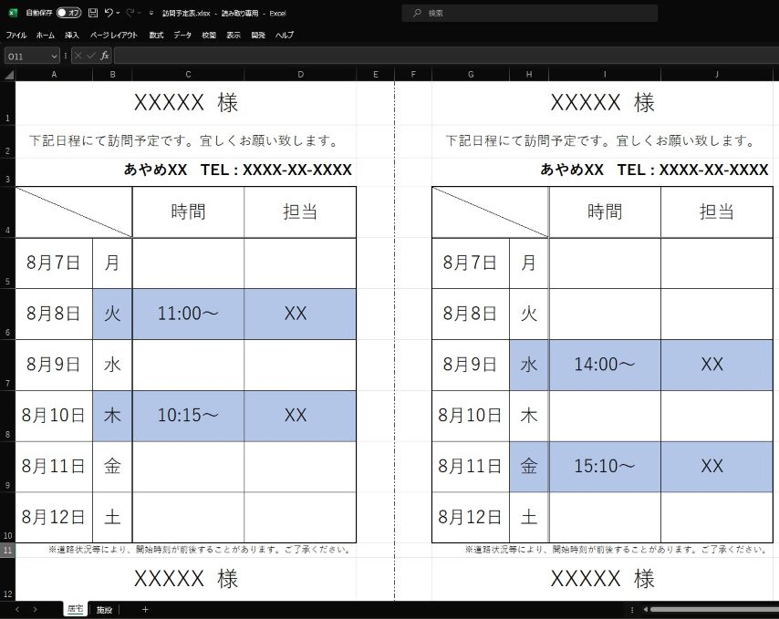
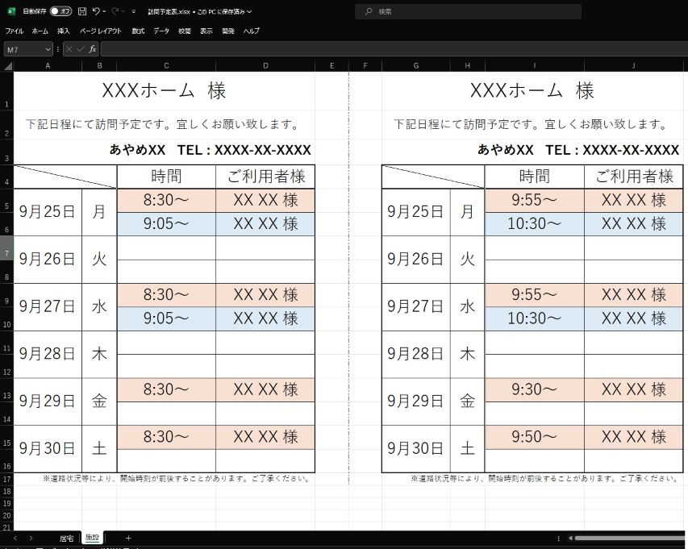
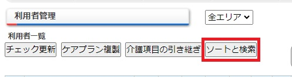
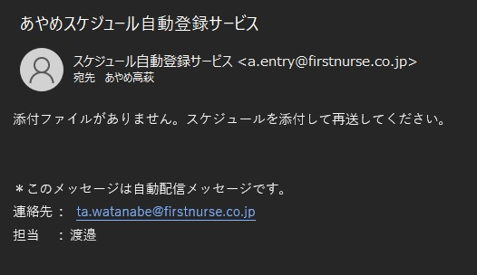

本ドキュメントはスケジュール自動登録サービス(以下、本サービスと記載)を使用するための、手順および注意事項を記載しています。 本サービスでは担当者、利用者、時間等を記載したエクセルファイル(.xlsx)を受付用メールアドレスに送付することで、下記の処理を自動で行います。
本サービスを使用するにあたって、既存の訪問スケジュールは使用できません。
配布する新しいフォーマットの訪問スケジュール表を使用してください。
また、スケジュールを記載する際に下記の通り記載頂くことで、自動的にケアウイングに反映されます。
必ず"ID"を付けて下さい)"★"を入力して下さい。"一般"」と記載して下さい。また一般訪問看護指示書かつ二人対応の場合は、と組み合わせて"★一般"と記載することも出来ます。
※1： 担当者・利用者IDの検索方法 参照
受付用のメールアドレス(a.entry@firstnurse.co.jp)にメールを送付する際の流れは下記の通りとなります。
登録対象のステーション名(ex.あやめXX)を入力します。配布用スケジュールサンプル
居宅

施設

A4かつ横向きで印刷し、中央で切り取っていただくことでA5サイズの予定表となります。 施設用のシートを作成するためには、初回のみ施設の登録が必要となりますので、施設用のスケジュールを希望されるステーションはご連絡下さい
point一覧を開き、「ソートと検索」ボタンを押下することで、名前の検索をすることが出来ます。 
従業員または、利用者の性(名)が変更となった場合、自動での更新はしておりません。お手数ではございますがご連絡下さい。
従業員または利用者の増加については自動で更新しておりますので、ご連絡は不要となります。
自動で変更が行われないため、こちらについてもご連絡下さい。
上記２項については、今後、より簡略化できるように改善致します。
同一日に同一住所への訪問が複数ある場合、自動的に精神療養費Ⅲを適用しています。
本サービスが取得する住所は、ケアウイングに登録の住所となります。本来、精神療養費Ⅲが適用されるべき箇所において、精神療養費Ⅰとなっている場合は、データの修正が必要となるため、ご連絡下さい。
登録されている住所に、部屋番号が入っている場合は高確率で精神療養費Ⅰとなってしまいます。お手数ではございますが、ご連絡下さい。
(ex.”A市B町XX-XX アパートC 101”の利用者、”A市B町XX-XX アパートC 102”のような住所の利用者がいるステーションは特にご注意下さい。)
本サービスの処理中に何らかのエラーが発生した場合、送付元にエラーメッセージが返されることがございます。
例えば下の画像は添付ファイルを添付しなかった際のエラーです。

他に、不明なエラーメッセージがメールで送信された場合は、お手数ではございますがご連絡ください。
アドレス: ta.watanabe@firstnurse.co.jp
担当 : 渡邉